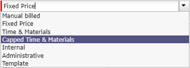
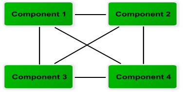
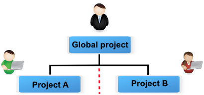

Concepts¶
Project¶
A project is the main entity of ProjeQtOr.
Project element is more than a Planning elements.
Gather all project data
It is also used to allows to gather all data depend on project:
Planning element
Risk assessment, Risk mitigation, Reserve
Ticket, Issue, Bug tracking, Change request, Support
Steering, Meeting, Decision, Action plan
Requirement & Test
Project expense
Quotation, Order, Bill, Payment
Document
Restrict data visibility
Allows restricting data visibility to users by project.
The project data visibility is granted according to the user profile.
See also
Project selector
The project selector works as a filter.
By default, the selector displays “all projects”, you can change this view in the user-miscelleanous settings and choose the project to display by default
You can restrict data for one or more dedicated projects without necessarily being bound
See also
The project type¶
Three project types can be defined:
1 - Operational project
Most common project to follow activity.
Manual Billed, Fixed price, Capped time, Time & materials, Internal are operationals projects

2 - Administrative project
Allows to follow the non productive work as holidays, sickness, training, …
All resources have access to this project type without being assigned (project) or assigned (Activity).
Create an activity, like an OPE project, for each type of absence.
3 - Template project
Designed to define templates, to be copied as operational project.
Any project manager can copy these projects without having to be assigned to them. On the other hand they will not be able to modify it and will have to copy the project in OPE for that.
For modifying a template project, the modifier must be assigned to the project..
See: Copy an item
Define billable project
A project can be billable or not.
Non billable project
The non billable project is used for internal or administrative project.
Billable project
For billable projects the billing types available are: at terms, on producing work, on capping produced work and manual.
The actual work done and billed is locked
Note
The project billing type is defined in a project type.
Which is associated to a project. See: Projects
Warning
When deleting a project, also delete the indicators, Emails and Delays for the tickets of this project
Hat project
The definition is made by the project type, you define that certain types of projects can not have activities, only subprojects or milestones..
Project type Behavior¶
Fix the planning
you can freeze the content of a project or projects from the moment you do not want to extend the project or modify it.
Allocation to project¶
Allocation to project is used to:
Define project data visibility.
Define resource availability.
Define the period of access to project data by the user.
Allocation to project¶
Field |
Description |
|---|---|
Unique Id of the resource. |
|
Resource |
Name of the allocated resource. |
Or contact |
Name of the allocated contact. |
|
Selected profile. |
|
Project allocated to. |
Rate |
Allocation rate for the project (%). |
Start date |
Start date of allocation. |
End date |
End date of allocation. |
Flag to indicate that the allocation is archived. |
|
Complete description of the allocation. |

Fields Resource & Contact
You can select resource or contact.
If none is selected then the user connected is used to define the allocation.
If a contact is a resource and inversely, then resource or contact name will be selected too.
The following sections describe allocation to project, performed for user, resource or contact.
User allocation¶
Allocation to project gives data visibility on a project.
Allocation to project can be defined in the Users screen.
Profile selection
Selected profile allows to define access rights on project elements.
Tip
Selected profile allows to define the role played by the user in a project.
For instance, the user might be a project manager in a project and it could be a project member in another.
Note
Profile defined in allocation to project does not grant or revoke access to users.
General access to application functionalities and data is defined by user profile.
Period selection
Allow to define the period of project data visibility.
Tip
Can be used to limit access period, according to services agreement.
Resource allocation to project¶
Allocation to project allows to define the resource availability on project.
A resource may be allocated to projects at a specified rate for a period.
Allocation to project can be defined in Projects and Resources screens.
It is also possible to allocate a team to a project in Teams screens.
Note
A resource allocated to a project can be defined as responsible of project items treatment.
Period & Rate selection
A resource may be allocated to a project at a specified rate for a period.
Note
If the period is not specified then the resource is allocated throughout the project.
Warning
The planning calculator tries to plan, the remaining work on the task assigned to a resource within the allocation to project period.
If remaining work on the task can’t be planned, a purple bar appears in the Gantt view.
Change resource on an allocation to project
A resource can be changed on allocation to project.
All tasks assigned to old resource will be transferred to the new resource with planned work and remaining work.
Work done on tasks belongs to always the old resource.
Multi-allocation to project¶
A resource can be allocated to multiple projects in the same period.
Make sure that the allocation to projects for a period not exceeding 100%.
In the section Allocations in Resources screen, a tool allows to displayed conflicts.
Tip
How resolve conflicts?
You can change allocation period to avoid overlap between projects.
You can change the rate of allocation for it does not exceed 100% for the period.
Activity¶
An activity is a kind of task that can be planned or that groups other activities.
This is usually a long-term task that can be assigned to one or more resources.
Activities will appear on the Gantt schedule view.
For example, you might consider an activity:
Scheduled tasks,
Modification requests,
The phases,
Versions or new deployments,
Activities can be grouped as a Mother / Daughter link.
The parent activity must belong to the same project.
A WBS structure is applied and a dynamic index is calculated for all activities.
The WBS Activity Index can be changed in the Gantt schedule view using drag and drop.
Assignment¶
The assignment is used to assign resources to project tasks (activity, test session, meeting).
Consists to assign a resource to a task in a specific function. The function allows to define the resource daily cost.
A resource assignment contains data about work on task (planned, real, left and reassessed work).
You can not remove a resource assignment once the resource has entered real work on the activity.
Similarly, if the resource has completed its activity, deletion is not possible.
You keep track of the resources that have been assigned and worked on the activity.
Note
Only resources allocated by the project can be assigned to project tasks.
Assignment can be done in Activities, Test sessions and Meetings screens.
Organization¶
The notion of organization introduces a way to consolidate projects on a different hiererchic structure, apart from projects / sub-projects structure.
Definition of the structure of the company in the frame of organizations
Departments, Units, Location, …
The organization summarizes the data of the projects in progress for the organization.

distribution within organizations¶
Organization link
Each project can be linked to an organization.
Resources can be linked to an organization.
Note
Depending on the profile, you can limit the visibility of resources to people in the same organization or team as the current user.
Sub-projects are by default attached to the same organization as the parent, but can be integrated into another organization.
Product¶
A product is a material object or for IT/IS projects is a software application.
Composition of product
A product can have a complex structure that can be composed of sub-product and components.
A product and its components can have several versions that represent each declination.
See: Product structure
Linked to a project
A product is an element delivered by a project.
The link with the project have no impact on project planning.
Indicates only that project is devoted to a specific product versions.
The link management is done in Projects and Product Versions screens.

Link with projects¶
Identifying the version that is the subject of treatment
Product (component) versions can be identified in these elements:
The purpose is to identify which product (component) and its version that is the subject of the treatment.
Depending on the element, it has the possibility identifying version of origin, target version or both.
Document management
Documents can be identified to products.
See: Documents
Management of product and component elements
See: Configuration Management, for detail about management of product and component elements.
Product structure¶
The product structure is defined depending on the relationships defined between product and component elements.
The rules defining a product structure are:
Relationships between product elements
A product can have several sub-products.
A sub-product can be in the composition only one product.

Relationships between product elements¶
Relationships between product and component elements
A product can be composed of several components.
A component can be in the composition of several products.

Relationships between product and component elements¶
Relationships between component elements
Components can be linked between them (N to N relationships).
Relationships between component elements¶
Versions of product and component elements
A product can have several versions that represent each declination of product.
A component can have several versions that represent each declination of the component.
Links can be defined between versions of products and components, but only with the elements defined in the product structure.

Link between versions of product and component¶
Planning¶
ProjeQtOr implements work-driven planning method.
Based upon on resource availability and their capacity.
Resource availability
Resource availability is defined by calendars and project allocation period.
Resource calendar
Each resource is attached to a calendar to define its working days.
Tasks assigned to the resource will be planned according to working days defined in the calendar.
More detail, see: Resource calendar
Project allocation period
The resource can be allocated to several projects.
Possibility to define allocation period.
More detail, see: Resource allocation to project
Resource capacity
Resource capacity is defined on daily base.
The scheduling tool does not exceed the daily resource capacity.
Note
Full Time Equivalent (FTE)
This indicator is defined for each resource.
It allows to define the daily capacity.
More detail, see: Resources
Project allocation rate
The project allocation rate is used to resolve allocation conflicts between projects.
It allows to define resource availability for a project during a period.
Use with the resource capacity, it allows to define the project allocation capacity on a weekly base.
Task assignation rate
The task assignation rate is used to keep some scheduling time for other tasks.
Use with the resource capacity, it allows to define the assignation capacity on a daily base.
Draft planning¶
Two methods can be used to create a draft planning.
Use planning mode “fixed duration”
This planning mode is used to define fixed duration tasks. See: Planning mode
Dependencies allow to define the execution order of tasks. See: Dependencies
You can define this planning mode as defaut in the Activities Types screen for some types of activities you’ll use in draft plannings
Use faked and team resource
The faked and team resource can be useful to get a first estimate of project cost and duration without involving the real resources.
Planning schedule is calculated using of the work-driven planning method.
Faked and team resources can be mixed in same draft planning.
Faked resources
For instance, you want to define a Java developer resource. You can create a resource named “Java developer #1”.
There are several levels of Java developer with different daily costs (beginner, intermediary and expert).
You can define for this resource the functions and average daily cost for each level. (See: Resource function and cost)
You assign this resource to tasks, to a specific function (level). (See: Assignment)
Faked resource will be easily replaced with real resources when project becomes real, with allocation replacement feature.
Team resource
A team resource is a resource whose daily capacity has been defined to represent capacity of a team (Capacity (FTE) > 1).
For instance, you needed to define four Java developers, but you don’t want to create a resource for each. You can overload the daily capacity of the resource (Example: Capacity FTE=4).
Using team resources is very easy but renders estimation of project duration as draft, not taking into account constraint of different resources such as possibly different skills or expertise level.
With team resources it is very easy to estimate planning with different number of members in the team : what if I include 5 Java develpers instead of 4 ? Just change capacity to 5 and re-calculate planning…
Planning elements¶
ProjeQtOr offers standard planning elements like Project, Activity and Milestone.
But also, it offers two more planning element: Test session and Meeting.
Project
This planning element defines the project.
It allows to specify information on the project sheet like the customer, bill contact, sponsor, manager and objectives.
Documents, notes and attachments can be annexed.
More detail: Projects
Sub-project
Sub-project is used to split the project.
The project can be split to correspond the organizational breakdown or something else.
Note
Separation of duties
A project can be split into multiple sub projects.
A project leader and team can be allocated to each sub-project.
Project allocation allows to define data visibility and isolate sub-projects. See: Allocation to project
A supervisor can follow-up the project in its totality.
Separation of duties¶
Activity
This planning element can be a phase, a delivery, a task or any other activity.
An activity can grouped other activities or be a task.
More detail, see: Activities screen
Grouping of activities
An activity can be the parent of activities.
This allows to define the structure of phases and deliveries.
Dates, works and costs of activities (child) are summarized in the activity (parent).
Task
An activity is a task when it’s not a parent of activities.
A task is assigned to resources for to be performed.
Test session
This planning element is a specialized activity aimed for tests.
A test session allows to define a set of test case that must be run.
A test session can grouped other test sessions or be a task.
More detail, see: Test sessions screen.
Grouping of test sessions
A test session can be the parent of test sessions.
This allows to define the structure of test sessions.
Dates, works and costs of test sessions (child) are summarized in the test session (parent).
Task
A test session is a task when it’s not a parent of test sessions.
A task is assigned to resources for to be performed.
Milestone
This planning element is a flag in the planning, to point out key dates.
May be a transition point between phases, deliveries.
ProjeQtOr offers two types of milestone floating and fixed.
More detail, see: Milestones screen.
Meeting
This planning element acts like a fixed milestone, but it’s a task.
Like a milestone, a meeting can be a transition point.
But also, like a task because it’s possible to assign resources and planned work.
More detail, see: Meetings screen.
Dependencies¶
Dependencies allow to define the execution order of tasks (sequential or concurrent).
All planning elements can be linked to others.
Dependencies can be managed in the Gantt chart and in screen of planning element.
More detail, see: Project planning, Predecessor and Sucessor element sections.
Note
Global parameter “Apply strict mode for dependencies”
If the value is set to “Yes”, the planning element (successor) can’t start the same day that the end date of planning element (predecessor).
Delay (days)
A delay can be defined between predecessor and successor (start).
Dependency types
ProjeQtOr offers only the dependency (Finish to Start).
This section explains what are they dependency types can be reproduced or not.
Start to Start
To reproduce this dependency type, it’s possible to add a milestone as prior of both tasks.
Start to Finish
This dependency type can’t be reproduced in ProjeQtOr.
This is a very weird scenario.
Finish to Finish
This dependency type can’t be reproduced in ProjeQtOr.
This involves reverse planning and may introduce overloading of resources, what is not possible in ProjeQtOr.
Planning mode¶
Planning mode allows to define constraints on planning elements: activity, test session and milestone.
Milestones planning mode
Planning modes are grouped under two types for milestone :
Floating
These planning modes have no constraint date.
Planning element is floating depending on its predecessors.
Planning modes: As soon as possible, Work together, Fixed duration and floating milestone.
Fixed
These planning modes have constraint date.
Planning modes: Must not start before validated date, As late as possible, Regular and fixed milestone.
Note
Because ProjeQtOr does not backward planning, the planning mode “As late as possible” with no constraint date (Floating) is not available.
Default planning mode
Possibility to define the default planning mode according to element type.
See: Activities types, Milestones types and Test sessions types screens.
Planning element planning mode
several planning modes for your project elements are proposed to best manage the time spent on certain planning elements
As soon as possible
Work together
Fixed duration
Must not start before validated start date
Should end before validated end date
Regular between dates
Regular in full days
Regular in half days
Regular in quarter days
Recurry (on weekly basis)
Prioritized planning elements
Planning elements are scheduled in this order of priority:
Fixed date (Fixed milestone, Meeting)
Recurrent activities - Planning modes “Regular…” (Activity, Test session)
Fixed duration (Activity, Test session)
Others
minimum threshold & not splitted work¶

The minimum threshold and the option not splitted work¶
When this value is set, the activity will only be scheduled on the day that the daily availability will be greater than or equal to this threshold.
You also have the option to add a new property to a “can not be split” task.
This will require defining the minimum work to be allocated each day and thus filling in the minimum threshold field
planning will require finding consecutive days with at least the given value possible.
Warning
Do not take into account the “real” work.
Scheduling priority¶
The scheduling priority allows to define scheduled order among planning elements.
Possible values: from 1 (highest priority) to 999 (lowest priority).
Scheduling priority value is set in progress section of planning element.
Note
If projects have different priorities, all elements of project with highest priority are scheduled first.
Project structure¶
Work breakdown structure (WBS) is used to define project structure.
Breakdown can be done with sub-projects, activities and test sessions.
Structure management
As seen previously, the project can be split in subprojects.
All other planning elements concerned by the project or subproject are put under them without structure.
Planning elements can be grouped and orderly in hierarchical form.
Structure management can be done in the Gantt chart or in planning elements screen.
WBS element numbering
The project is numbered by its id number.
All other elements are numbered depending on their level and sequence.
WBS numbering is automatically adjusted.
Project scheduling calculation¶
The project schedule is calculated on the full project plan that includes parents and predecessor elements (dependencies).
Scheduling
The calculation is executed task by task in the following order:
Dependencies (Predecessor tasks are calculated first)
Prioritized planning elements
Project priority
Task priority
Project structure (WBS)
Constraints
The remaining work (left) on tasks will be distributed on the following days from starting planning date, taking into account several constraints:
Resource availability
Resource capacity
Project allocation capacity (Project allocation rate)
Assignation capacity (Task assignation rate)
Planning mode
Resource overloads
This is not possible to overloading the resources.
The planning calculation process respects availability and capacity of the resource.
If it is not possible to distribute remaining work, on already planned days, the calculation process uses new available time slot.
ProjeQtOr roles¶
A stakeholder can play many roles in ProjeQtOr.
Roles depends on Stakeholder definition.
Specific roles are defined to allow:
To categorize the stakeholders involved in the projects.
To identify the stakeholders on items.
To regroup the stakeholders to facilitate information broadcasting.
Use to
In items of elements.
As reports parameters.
As recipients list to mailing and alert.
Glossary¶
- Administrator
An administrator is a user with “Administrator” profile. Has a visibility over all the projects.
- Contact
A contact is a person in a business relationship. A contact can be a person in the customer organization. Used as contact person for contracts, sales and billing. Contacts management is performed on Contacts screen.
- Issuer
An issuer is a user who created the item.
See also
Creation information
The issuer name and creation date of an item are displayed in the Creation information zone.
- Project leader
A project leader is a resource allocated to a project with a “Project Leader” profile.
- Project manager
A project manager is a resource defined as the manager on a project.
See also
Accelerator button
This button allows to set current user is the project manager. More detail, see: Assign to me button.
- Project team
All resources allocated to a project.
- Requestor
A requestor is a contact. Used to specify the requestor for ticket, activity and requirement. Only contacts allocated to the selected project can be a requestor.
- Responsible
A responsible is a resource in charge of item treatment. Usually, the responsible is set when the status of the item is handled. Only resources allocated to the selected project can be a responsible.
GUI behavior
It is possible to define that responsible field is mandatory on handled status. The element type screens allow to set this parameter to several elements. More detail, see: Behavior section.
Set automatically the responsible
It is possible to set automatically the responsible. More detail, see: Global parameters
Accelerator button
This button allows to set current user is the responsible. More detail, see: Assign to me button.
Access rights
It is possible to define a combination of rights to permit access for elements the user is responsible for. More detail, see: Access modes screen.
- Resource
Human or material resource involved in the projects.
It is possible to define the resource availability to the projects.
Resources management is performed on the Resources screen.
- User
User allows to connect to the application.
User profile define general access rights. But it does not necessarily give access to project data.
Users management is performed on the Users screen.
Profiles definition¶
The profile is a group used to define application authorization and access rights to the data.
A user linked to a profile belongs to this group who share same application behavior.
Note
You can define profiles to be conformed to the roles defined in your organization.
Access rights management is done on Acces Right screens
Used for
The profile is used to define access rights to application and data, first.
Also, the profile is used to send message, email and alert to groups.
Selected profile in project allocation
A profile can be selected to a user, resource or contact in project allocation.
The profile selected is used to give data access to elements of the projects.
Workflow definition
The profile is used to define who can change from one status to another one.
You can restrict or allow the state transition to another one according to the profile.
Workflow definition is managed in Workflows screen.
Predefined profiles
ProjeQtOr offer some predefined profiles.
- Administrator profile
This profile group all administrator users.
Only these users can manage the application and see all data without restriction.
The user “admin” is already defined.
- Supervisor profile
Users linked to this profile have a visibility over all the projects.
This profile allows to monitor projects.
- Project leader profile
Users of this profile are the project leaders.
The project leader has a complete access to owns projects.
- Project member profile
A project member is working on projects allocated to it.
The user linked to this profile is a member of team projects.
- Project guest profile
Users linked to this profile have limited visibility to projects allocated to them.
The user “guest” is already defined.
Predefined profiles (External)
ProjeQtOr allow to involve client employees in their projects.
The distinction between this profile and its equivalent, user access is more limited.
Stakeholder definition¶
ProjeQtOr allows to define roles of stakeholders.
The stakeholder definition is made with profile and a combination with user/resource/contact definition.
The combinations user/resource/contact allow to define:
Connection to the application or not.
Data visibility.
Resource availability.
Contact roles.
The next matrix shows the different possibilities.
Connection |
Visibility |
Availability |
|
|---|---|---|---|
URC |
|
|
|
UR |
|
|
|
UC |
|
|
|
U |
|
|
|
R |
|
|
|


Row legend
U = User, R = Resource, C = Contact
Data visibility

Data visibility diagram¶
User profile
To a user, data visibility is based on its user profile.
User profile defined general access to application functionalities and data.
Base access rights defined if a user has access to own projects or over all projects.
All projects
This access right is typically reserved for administrators and supervisors.
Users have access to all elements of all projects.
Own projects
Users with this access right must be allocated to project to get data visibility.
Selected profile in allocation allows to define access rights on project elements.
For more detail, see: Allocation to project.
Resource availability
Resource availability diagram¶
Only resource can be assigned to project activities.
Project allocation allows to define the resource availability on project.
Human resource
Human resource is a project member.
Combined with a user, a human resource can connect to the application.
Material resource
Material resources availability can be defined on projects.
But, material resource must not be connected to the application.
Contact roles
ProjeQtOr allows to involve contacts in projects.
Combined with a user, a contact can connect to the application
Combined with a resource, contact availability can be planned in projects.

Contact roles diagram¶
Resource function and cost¶
Function
The function defines the generic competency of a resource.
It is used to define the role play by the resource on tasks.
In real work allocation screen, the function name will be displayed in the real work entry.
A main function must be defined to resource and it is used as default function.
A daily cost can be defined for each function of the resource.
The Functions screen allows to manage function list.
Resource cost definition
Allows to define the daily cost, according to the functions of the resource.
The daily cost is defined for a specific period.
Real cost calculation
When real work is entered, the real cost is calculated with work of the day and daily cost for this period.
Planned cost calculation
When the project planning is calculated, resource cost is used to calculate planned cost.
Planned cost is calculated with planned work of the day and current daily cost.
Note
Function and cost are defined in Resources screen.
Resource calendar¶
A calendar defines the working days in a the year.
A calendar is defined for a type of resources and each resource is attached to a calendar.
Planning process
Calendars are used in the planning process which dispatches work on every working day.
During the planning process, the assigned work to a resource is planned in its working days.
Note
You must re-calculate an existing planning to take into account changes on the calendar.
Shows the availability of resources
Working days defined in a calendar allows to show availability of resources.
Default calendar
The default calendar is used to define the working days in the year.
By default, this calendar is defined for all resources.
Specific calendar
A specific calendar can be created to define working days for a type of resource.
Use case
Public holiday
You can use the default calendar to set public holidays.
Work schedule
You can define a different work schedule to some resources.
This calendar defined exceptions to normal working days.
For instance, you can define a calendar for resources on leave on Wednesdays.
Important
Personal calendar
Even if you can create a specific calendar to each resource, this is not the advised way to manage personal days off and vacations.
You’d better use Administrative projects (enter real work in advance).
Contexts¶
The contexts defines a list of elements selectable to define ticket context and test case environment.
Contexts are initially set to be able to define contexts for IT Projects, for three context types :
Environment
Operating System
Browser
They can be changed to be adapted to any kind of project.
Section Description
Field |
Description |
|---|---|
Unique Id for the context. |
|
Context type |
One of the three context type. |
Name |
Name of the context. |
Sort order |
Number to define the order of display in lists |
Flag to indicate that the context is archived. |
Fields Context type
The list is fixed.
Captions are translated and so can be changed in language file.